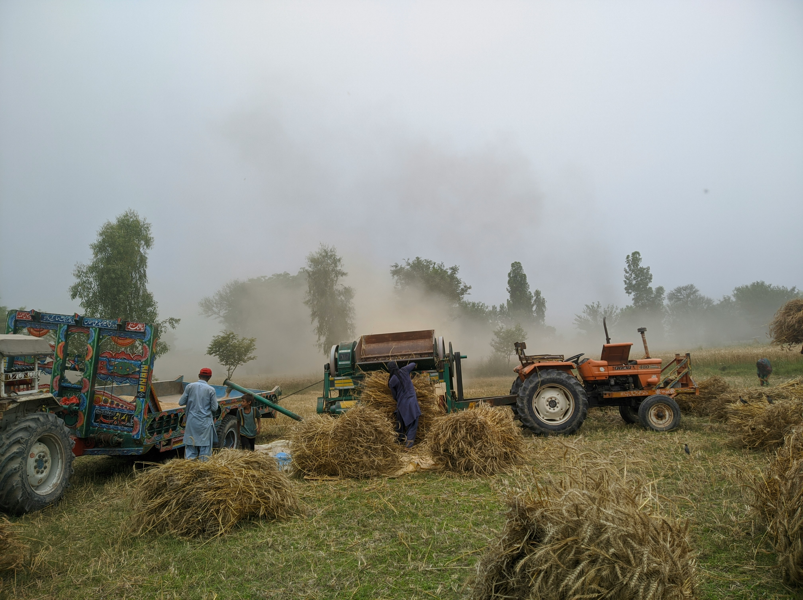
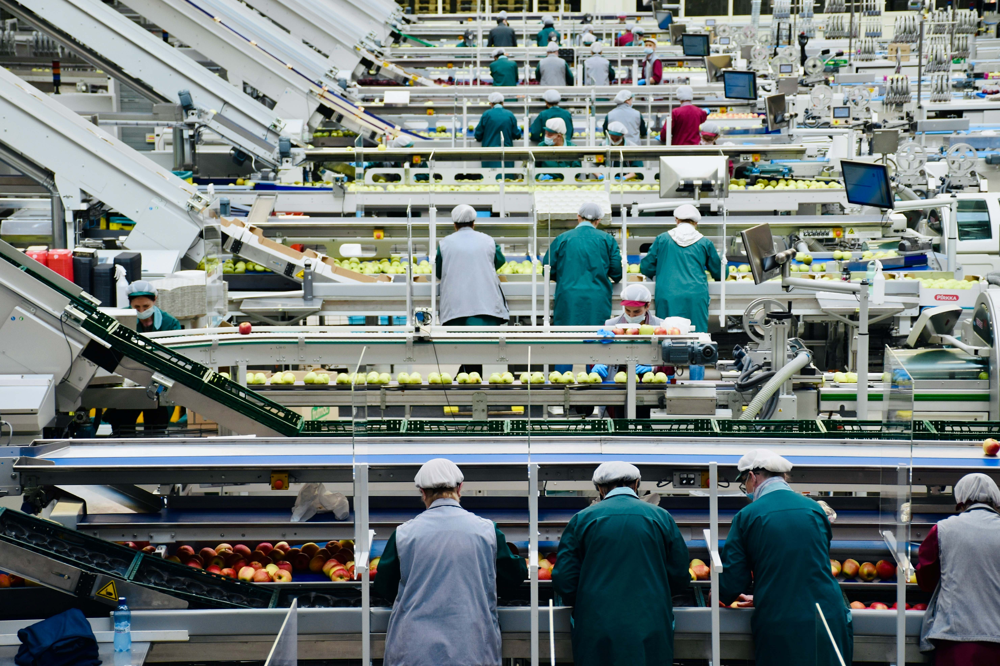

Etapas da Cadeia Produtiva

Etapa Primária
A produção começa no campo: agricultura, pecuária e extrativismo garantem os insumos básicos para o consumo urbano.

Etapa Secundária
Indústrias transformam matérias-primas em produtos acabados. O leite vira queijo, a soja vira óleo, o milho vira farinha.

Etapa Terciária
Serviços de transporte, venda, marketing e consumo fecham o ciclo e movimentam a economia entre campo e cidade.